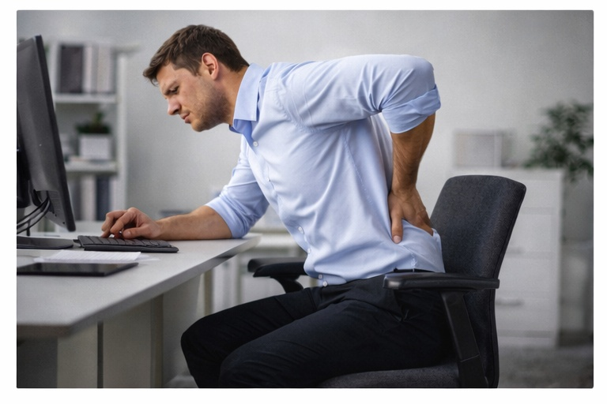

Боль в спине из-за позы
Длительное сидение и положение тела в течение дня могут создавать постоянную нагрузку на спину.
Боль в спине часто связана не с одной травмой, а с длительной статической нагрузкой. Работа за компьютером, неудобное положение тела и недостаток движения постепенно увеличивают нагрузку на позвоночник и мышцы. Со временем это приводит к дискомфорту, ограничению движения и снижению качества жизни.
Основные причины
💺 Длительное сидение
Статическая нагрузка без смены положения тела.

Длительное сидение увеличивает нагрузку на позвоночник.
🪑 Неправильная поза
Положение тела влияет на распределение нагрузки.

Неправильная поза создаёт избыточное напряжение.
🔁 Отсутствие движения
Недостаток активности снижает адаптацию тканей.

Движение необходимо для нормальной работы спины.
💻 Рабочая среда
Стол, стул и экран могут усиливать нагрузку.

Организация рабочего места влияет на нагрузку на спину.
Другие ситуации с болью в спине
Если боль связана с позой — важно изменить привычки, а не только снимать симптомы.
Записаться на консультацию